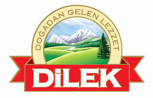

Trade Mark Journal No.2025/014 4 April 2025
UK00004178354 24 March 2025 (29,30,31,32)

International priority date claimed: 17 October 2024
(European Union Intellectual Property Office (EUIPO))
(019092730)
- Class 29
- Meat, fish, poultry and game; Meat extracts; Preserved, frozen, dried and cooked fruits and vegetables; Jellies, jams, compotes; Eggs; Milk, cheese, butter, yoghurt and other dairy products; Edible oils and fats; Dairy products and dairy substitutes; Processed fruits, fungi, vegetables, nuts and pulses; Egg products; Pickled vegetables; Prepared meals consisting principally of vegetables; Lentils, preserved; Processed chickpeas; Canned beans; Cooked beans; Baked beans; Beans; Beans, preserved; Processed grape leaves; Processed eggplant; Olives, [prepared]; Stuffed olives; Dried olives; Olives, preserved; Olive paste; Tomato paste; Paprika paste; Peeled tomatoes; Tomato purée; Tomato preserves; Processed tomatoes; Processed peppers; Preserved peppers; Pickles; Mixed pickles; Processed cabbage; pickled cabbage; prepared cucumbers; Gherkins; Grilled vegetables; Dried tomatoes; Processed pimientos; Pickled jalapenos; Preserved chilli peppers; Tahini [sesame seed paste]; Sunflower seeds, prepared; Processed pumpkin seeds; Hazelnuts, prepared; Prepared pistachio; Processed pignoli; Processed apricots; Dried figs; Processed mulberries; Processed dates; Sultanas; Nut-based snack foods; Dried fruit-based snacks; Soft cheese; Strained soft white cheeses; Fresh unripened cheeses; Curd cheese; Sheep cheese; Goat cheese; Processed chia seed for food.
- Class 30
- Coffee, tea, cocoa and substitutes therefor; Rice, pasta and noodles; Tapioca and sago; Flour and preparations made from cereals; Bread, pastry and confectionery; Chocolate; Ice cream, sorbets and other kinds of edible ices; Sugar, honey, treacle; Yeast, baking-powder; Salt, condiments, spices, preserved herbs; vinegar, sauces and Other seasonings; Cereals; Breakfast cereals; Pastries, Cakes and cookies; dried and fresh noodles and pasta; Savoury sauces, chutneys and pastes; Sweetmeats; Chocolate bars; Dough and Baking dough; Goods made of prepared cereals; Bulgur; Rice vermicelli; Rice pasta; Couscous [semolina]; Maize meal [corn, milled]; Corn flour; Polenta; Quinoa, processed; Pepper sauce; Sesame confectionery; Ready-to-bake dough products; Pasta in the form of sheets; Snack foods prepared from maize; Corn, roasted; Confectionery.
- Class 31
- Raw and unprocessed agricultural and horticultural products; Raw and unprocessed grains and seeds; Fresh fruit and vegetables, fresh herbs; Nuts being fresh; Quinoa, unprocessed; Unprocessed chia seeds; Fresh chick peas.
- Class 32
- Non-alcoholic beverages; Mineral and aerated waters; Fruit beverages and fruit juices; Syrups and other preparations for making non-alcoholic beverages; Fruit juice beverages; Lemonades; Isotonic beverages; Cola drinks; Soda water; Flavoured waters; Fruit flavoured waters.
Anatol GmbH & Co. Großhandels KG
Representative: Trademark Tonic Limited